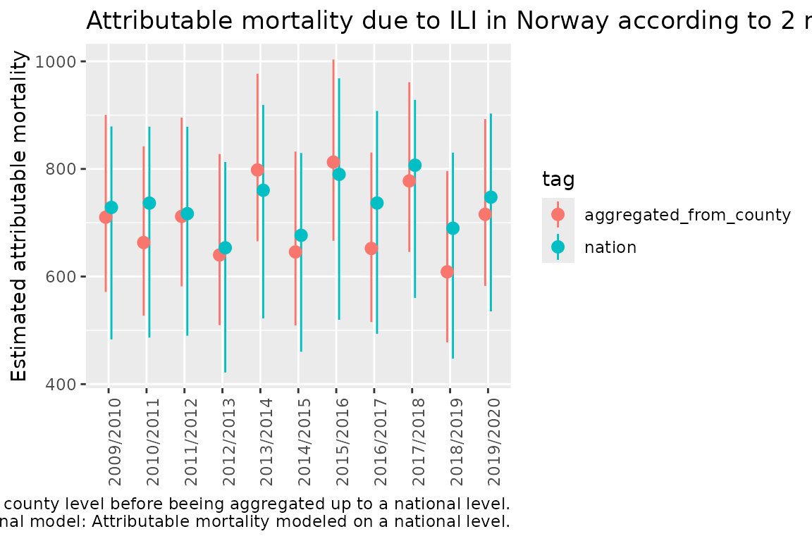
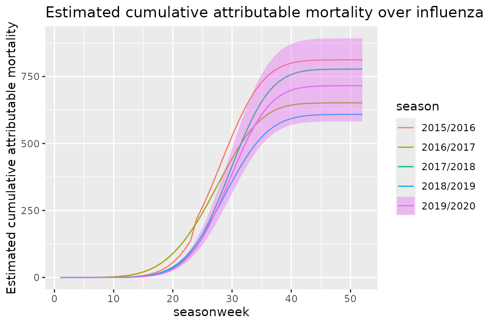
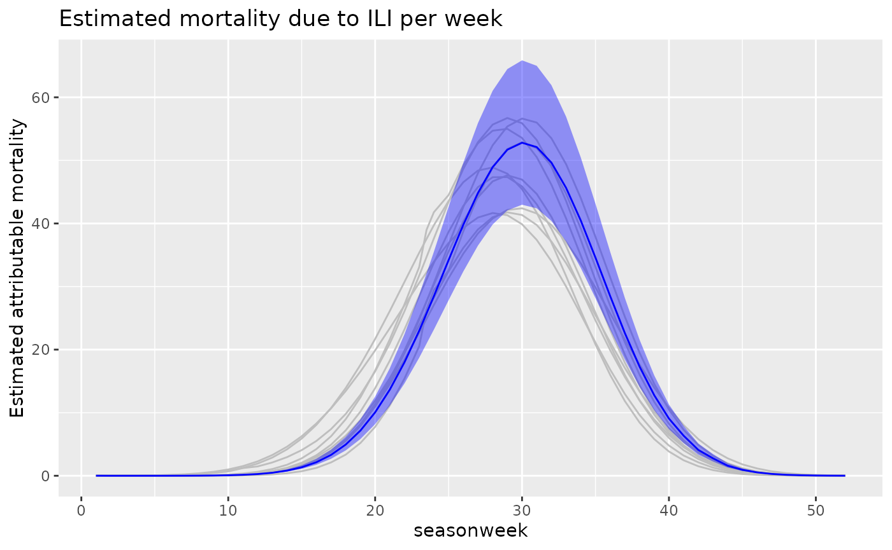
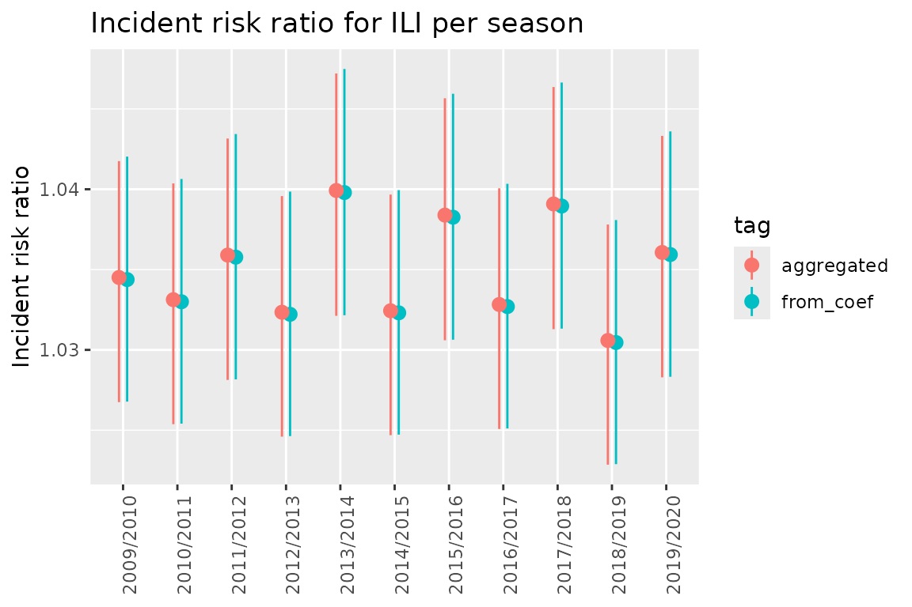

Introduction
attrib provides a way of estimating what the mortality would have been if some given exposures are set to a reference value. By using simulations from the posterior distribution of all coefficients we can easily aggregate over time and locations while still estimating valid credible intervals.
This vignette will go through:
- how to use
fit_attribto fit the model to the data - how to use
est_attribto estimate the mortality under different scenarios (i.e. when the exposures are at reference values and at observed values) - some examples of usages of the resulting dataset
Data example
We will use the datasets data_fake_attrib_county and data_fake_attrib_nation.
data_fake_attrib_county consists of fake mortality data for all counties of Norway on a weekly basis from 2010 until 2020. The dataset consists of the following features:
- location_code: Location code of the different counties
- isoyear: Isoyear
- isoweek: Week number
- isoyearweek: Isoyear and isoweek
- season: Years of the season
- seasonweek: Number of weeks from the start of the season
- pop_jan1_n: Population size
- ili_isoweekmean0_6_pr100: Percentage of doctors consultations diagnosed with influenza like illnesses
- ili_isoweekmean7_13_pr100: ili_isoweekmean0_6_pr100 lagged with one week
- heatwavedays_n: number of heatwaves
- deaths_n: number of deaths
data_fake_attrib_nation is a similar dataset at the national level.
data_fake_county <- attrib::data_fake_attrib_county
data_fake_nation <- attrib::data_fake_attrib_nation
head(data_fake_county, 5)
#> Key: <location_code, isoweek>
#> location_code isoyear isoweek isoyearweek season seasonweek pop_jan1_n
#> <char> <int> <int> <char> <char> <num> <num>
#> 1: county_nor03 2010 1 2010-01 2009/2010 24 693494
#> 2: county_nor03 2011 1 2011-01 2010/2011 24 693494
#> 3: county_nor03 2012 1 2012-01 2011/2012 24 693494
#> 4: county_nor03 2013 1 2013-01 2012/2013 24 693494
#> 5: county_nor03 2014 1 2014-01 2013/2014 24 693494
#> ili_isoweekmean0_6_pr100 ili_isoweekmean7_13_pr100 heatwavedays_n deaths_n
#> <num> <num> <num> <int>
#> 1: 0.9231202 0.8146507 0 112
#> 2: 1.8997241 1.7890927 0 113
#> 3: 1.3924947 1.6017501 0 128
#> 4: 0.9296033 0.7167721 0 126
#> 5: 1.3933639 1.1638354 0 115In this example we will look at the exposures ili_isoweekmean7_13_pr100 and heatwavedays_n and calculate the attributable mortality due to these exposures.
Fitting using fit_attrib
County level
We want to estimate the attributable mortality due to ILI and heatwaves. attrib lets us fit models with both fixed and random effect and offsets using linear mixed models (LMM).
We use the glmer function from the lme4 package. In practice, this means we must specify the response, offsets, the fixed effects, and the random effects. In our case we will model the response deaths as a function of:
- the fixed effects:
- heatwavedays_n
- ili_isoweekmean7_13_pr100
- sin(2 * pi * (isoweek - 1) / 52)
- cos(2 * pi * (isoweek - 1) / 52)
- the random effects:
- (1|location_code)
- (ili_isoweekmean7_13_pr100|season)
- the offset:
- log(pop_jan1_n)
#response
response <- "deaths_n"
# fixed effects
fixef_county <- " heatwavedays_n +
ili_isoweekmean7_13_pr100 +
sin(2 * pi * (isoweek - 1) / 52) +
cos(2 * pi * (isoweek - 1) / 52)"
#random effects
ranef_county <- "(1|location_code) +
(ili_isoweekmean7_13_pr100|season)"
#offset
offset_county <- "log(pop_jan1_n)"
# Now we fit the model using `fit_attrib`.
fit_county <- fit_attrib(
data_fake_county,
response = response,
fixef = fixef_county,
ranef = ranef_county,
offset = offset_county
)This results in the following fit:
fit_county
#> Generalized linear mixed model fit by maximum likelihood (Laplace
#> Approximation) [glmerMod]
#> Family: poisson ( log )
#> Formula: deaths_n ~ heatwavedays_n + ili_isoweekmean7_13_pr100 + sin(2 *
#> pi * (isoweek - 1)/52) + cos(2 * pi * (isoweek - 1)/52) +
#> offset(log(pop_jan1_n)) + (1 | location_code) + (ili_isoweekmean7_13_pr100 |
#> season)
#> Data: data
#> AIC BIC logLik -2*log(L) df.resid
#> 44402.03 44462.79 -22192.02 44384.03 6305
#> Random effects:
#> Groups Name Std.Dev. Corr
#> location_code (Intercept) 0.001725
#> season (Intercept) 0.002016
#> ili_isoweekmean7_13_pr100 0.005003 -1.00
#> Number of obs: 6314, groups: location_code, 11; season, 11
#> Fixed Effects:
#> (Intercept) heatwavedays_n
#> -8.79945 0.07321
#> ili_isoweekmean7_13_pr100 sin(2 * pi * (isoweek - 1)/52)
#> 0.03429 0.01448
#> cos(2 * pi * (isoweek - 1)/52)
#> 0.06784
#> optimizer (Nelder_Mead) convergence code: 0 (OK) ; 0 optimizer warnings; 1 lme4 warningsNote that fit has the added attributes offset (saving the offset name) and fit_fix (the coefficients of the linear model fitted on only the fixed effects). These are needed by est_attrib to create the dataset containing only the fixed effects.
National level
We estimate the same as before But on a national level, meaning we remove the random effect (1|location_code) since we only have one location code. This gives the following features:
- the fixed effects:
- heatwavedays_n
- ili_isoweekmean7_13_pr100
- sin(2 * pi * (isoweek - 1) / 52)
- cos(2 * pi * (isoweek - 1) / 52)
- the random effects:
- (ili_isoweekmean7_13_pr100|season)
- the offset:
- log(pop_jan1_n)
#response
response <- "deaths_n"
# fixed effects
fixef_nation <- " heatwavedays_n +
ili_isoweekmean7_13_pr100 +
sin(2 * pi * (isoweek - 1) / 52) +
cos(2 * pi * (isoweek - 1) / 52)"
#random effects
ranef_nation <- "(ili_isoweekmean7_13_pr100|season)"
#offset
offset_nation <- "log(pop_jan1_n)"
# Now we fit the model using `fit_attrib`.
fit_nation <- fit_attrib(
data_fake_nation,
response = response,
fixef = fixef_nation,
ranef = ranef_nation,
offset = offset_nation
)Using the sim function
The sim function can be used to generate simulations for all the rows in our data.
It first generates n_sim simulations from the posterior distribution of the coefficients from out fit before applying these coefficients on our dataset generating n_sim simulations and expected mortality for each line. This is quite generic. Hence if the goal is to compute attributable mortality or incident risk ratios we use est_attrib as shown in a later part of the vignette.
n_sim <- 20
sim_data <- sim(fit_nation, data_fake_nation, n_sim)
head(sim_data[id_row == 1], 5)
#> location_code isoyear isoweek isoyearweek season seasonweek pop_jan1_n
#> <char> <int> <int> <char> <char> <num> <num>
#> 1: nation_nor 2009 30 2009-30 2009/2010 1 5367580
#> 2: nation_nor 2009 30 2009-30 2009/2010 1 5367580
#> 3: nation_nor 2009 30 2009-30 2009/2010 1 5367580
#> 4: nation_nor 2009 30 2009-30 2009/2010 1 5367580
#> 5: nation_nor 2009 30 2009-30 2009/2010 1 5367580
#> ili_isoweekmean0_6_pr100 ili_isoweekmean7_13_pr100 heatwavedays_n deaths_n
#> <num> <num> <num> <int>
#> 1: 8.98914e-07 0 0.8181818 827
#> 2: 8.98914e-07 0 0.8181818 827
#> 3: 8.98914e-07 0 0.8181818 827
#> 4: 8.98914e-07 0 0.8181818 827
#> 5: 8.98914e-07 0 0.8181818 827
#> id_row sim_id sim_value
#> <int> <num> <num>
#> 1: 1 1 809.0809
#> 2: 1 2 805.4690
#> 3: 1 3 809.6061
#> 4: 1 4 803.1244
#> 5: 1 5 810.9444We can see that we now have multiple expected mortalities for the same dataline. This is due to the coefficient simulations.
Estimating attributable mortality using est_attrib
To estimate attributable mortality we simulate:
- the estimated mortality for observed exposures
- the estimated mortality for the exposures set to reference values
This is easily done using est_attrib.
We need to give the fit, the dataset, the exposures with reference values, and the number of simulations. est_attrib will then using the arm::sim function to generate simulations of the underlying posterior distribution. attrib::sim will then combine the simulated coefficients to estimate the modeled outcome (i.e. number of deaths) for each simulation.
exposures <- list( "heatwavedays_n" = 0, "ili_isoweekmean7_13_pr100" = 0)
n_sim <- 20
est_attrib_sim_county <- attrib::est_attrib(
fit_county,
data_fake_county,
exposures = exposures,
n_sim = n_sim
)
est_attrib_sim_nation <- attrib::est_attrib(
fit_nation,
data_fake_nation,
exposures = exposures,
n_sim = n_sim
)
head(est_attrib_sim_county, 5)
#> location_code isoyear isoweek isoyearweek season seasonweek pop_jan1_n
#> <char> <int> <int> <char> <char> <num> <num>
#> 1: county_nor03 2010 1 2010-01 2009/2010 24 693494
#> 2: county_nor03 2011 1 2011-01 2010/2011 24 693494
#> 3: county_nor03 2012 1 2012-01 2011/2012 24 693494
#> 4: county_nor03 2013 1 2013-01 2012/2013 24 693494
#> 5: county_nor03 2014 1 2014-01 2013/2014 24 693494
#> ili_isoweekmean0_6_pr100 ili_isoweekmean7_13_pr100 heatwavedays_n deaths_n
#> <num> <num> <num> <int>
#> 1: 0.9231202 0.8146507 0 112
#> 2: 1.8997241 1.7890927 0 113
#> 3: 1.3924947 1.6017501 0 128
#> 4: 0.9296033 0.7167721 0 126
#> 5: 1.3933639 1.1638354 0 115
#> id sim_id sim_value_exposures=observed sim_value_heatwavedays_n=0
#> <int> <num> <num> <num>
#> 1: 1 1 113.6989 113.6989
#> 2: 2 1 118.5503 118.5503
#> 3: 3 1 118.0417 118.0417
#> 4: 4 1 113.4645 113.4645
#> 5: 5 1 116.3428 116.3428
#> sim_value_ili_isoweekmean7_13_pr100=0
#> <num>
#> 1: 110.5047
#> 2: 111.6251
#> 3: 111.3693
#> 4: 110.8212
#> 5: 111.0248We can see in the above dataset that the columns id, sim_id, sim_value_exposures=observed, sim_value_heatwavedays_n=0, sim_value_ili_isoweekmean7_13_pr100=0 are added to the previous set of columns. For each row in the original dataset we now have 20 rows, one for each of the simulations done by est_attrib. In each row we see the estimate of the number of deaths given a reference value for sim_value_heatwavedays_n and sim_value_ili_isoweekmean7_13_pr100.
To make the data processing easier later we convert the dataset from wide to long form and collapse the estimated mortality
est_attrib_county_long <- data.table::melt.data.table(
est_attrib_sim_county,
id.vars = c(
"location_code",
"isoyear",
"isoweek",
"isoyearweek",
"season",
"seasonweek",
"id",
"sim_id",
"deaths_n",
"sim_value_exposures=observed"
),
measure.vars = c(
"sim_value_heatwavedays_n=0",
"sim_value_ili_isoweekmean7_13_pr100=0"
)
)
data.table::setnames(est_attrib_county_long, "variable", "attr")
head(est_attrib_county_long, 5)
#> location_code isoyear isoweek isoyearweek season seasonweek id sim_id
#> <char> <int> <int> <char> <char> <num> <int> <num>
#> 1: county_nor03 2010 1 2010-01 2009/2010 24 1 1
#> 2: county_nor03 2011 1 2011-01 2010/2011 24 2 1
#> 3: county_nor03 2012 1 2012-01 2011/2012 24 3 1
#> 4: county_nor03 2013 1 2013-01 2012/2013 24 4 1
#> 5: county_nor03 2014 1 2014-01 2013/2014 24 5 1
#> deaths_n sim_value_exposures=observed attr value
#> <int> <num> <fctr> <num>
#> 1: 112 113.6989 sim_value_heatwavedays_n=0 113.6989
#> 2: 113 118.5503 sim_value_heatwavedays_n=0 118.5503
#> 3: 128 118.0417 sim_value_heatwavedays_n=0 118.0417
#> 4: 126 113.4645 sim_value_heatwavedays_n=0 113.4645
#> 5: 115 116.3428 sim_value_heatwavedays_n=0 116.3428We can see that the columns sim_value_heatwavedays_n=0, sim_value_ili_isoweekmean7_13_pr100=0 are now collapsed into the new column attr and value with attr describing which exposure we have and value giving the corresponding reference value.
est_attrib_nation_long <- data.table::melt.data.table(
est_attrib_sim_nation,
id.vars = c(
"location_code",
"isoyear",
"isoweek",
"isoyearweek",
"season",
"seasonweek",
"id",
"sim_id",
"deaths_n",
"sim_value_exposures=observed"
),
measure.vars = c(
"sim_value_heatwavedays_n=0",
"sim_value_ili_isoweekmean7_13_pr100=0"
)
)
data.table::setnames(est_attrib_nation_long, "variable", "attr")
head(est_attrib_nation_long, 5)
#> location_code isoyear isoweek isoyearweek season seasonweek id sim_id
#> <char> <int> <int> <char> <char> <num> <int> <num>
#> 1: nation_nor 2009 30 2009-30 2009/2010 1 1 1
#> 2: nation_nor 2009 31 2009-31 2009/2010 2 2 1
#> 3: nation_nor 2009 32 2009-32 2009/2010 3 3 1
#> 4: nation_nor 2009 33 2009-33 2009/2010 4 4 1
#> 5: nation_nor 2009 34 2009-34 2009/2010 5 5 1
#> deaths_n sim_value_exposures=observed attr value
#> <int> <num> <fctr> <num>
#> 1: 827 804.4744 sim_value_heatwavedays_n=0 758.0887
#> 2: 751 790.3920 sim_value_heatwavedays_n=0 759.7097
#> 3: 811 782.3847 sim_value_heatwavedays_n=0 762.0038
#> 4: 787 795.8370 sim_value_heatwavedays_n=0 764.9434
#> 5: 828 789.0473 sim_value_heatwavedays_n=0 768.4929Compare the national data to data aggregated from county to national level.
We will now aggregate our two simulated datasets (one on a county level and one on a national level) to aid in comparison.
Aggregate from county/weekly to national/seasonal
We proceed by aggregating the county dataset to the national/seasonal level. Afterwards we calculate the expected attributable mortality, exp_attr, by subtracting value (the simulated expected number of deaths given the reference value of the exposure) from the sim_value_exposures=observed.
To be able to separate this dataset from the other we add a tag.
aggregated_county_to_nation <- est_attrib_county_long[,.(
"sim_value_exposures=observed" = sum(`sim_value_exposures=observed`),
value = sum(value),
deaths_n = sum(deaths_n)
), keyby = .(season, attr, sim_id)]
# Add exp_attr, exp_irr and a tag.
aggregated_county_to_nation[, exp_attr:= (`sim_value_exposures=observed` - value)]
aggregated_county_to_nation[, tag := "aggregated_from_county"]
head(aggregated_county_to_nation, 5)
#> Key: <season, attr, sim_id>
#> season attr sim_id sim_value_exposures=observed
#> <char> <fctr> <num> <num>
#> 1: 2009/2010 sim_value_heatwavedays_n=0 1 43676.75
#> 2: 2009/2010 sim_value_heatwavedays_n=0 2 43612.13
#> 3: 2009/2010 sim_value_heatwavedays_n=0 3 44387.98
#> 4: 2009/2010 sim_value_heatwavedays_n=0 4 44109.86
#> 5: 2009/2010 sim_value_heatwavedays_n=0 5 44261.88
#> value deaths_n exp_attr tag
#> <num> <int> <num> <char>
#> 1: 43258.31 44006 418.4357 aggregated_from_county
#> 2: 43231.69 44006 380.4454 aggregated_from_county
#> 3: 43987.75 44006 400.2311 aggregated_from_county
#> 4: 43704.35 44006 405.5112 aggregated_from_county
#> 5: 43842.15 44006 419.7335 aggregated_from_countyAggregating the national model per season
For the national model we aggregate over seasons and create exp_attr in the same way as above.
aggregated_nation <- est_attrib_nation_long[, .(
"sim_value_exposures=observed" = sum(`sim_value_exposures=observed`),
value = sum(value),
deaths_n = sum(deaths_n)
), keyby = .(season, attr, sim_id)]
aggregated_nation[, exp_attr:= (`sim_value_exposures=observed` - value)]
aggregated_nation[, tag:= "nation"]
head(aggregated_nation, 5)
#> Key: <season, attr, sim_id>
#> season attr sim_id sim_value_exposures=observed
#> <char> <fctr> <num> <num>
#> 1: 2009/2010 sim_value_heatwavedays_n=0 1 44097.56
#> 2: 2009/2010 sim_value_heatwavedays_n=0 2 44353.71
#> 3: 2009/2010 sim_value_heatwavedays_n=0 3 43916.50
#> 4: 2009/2010 sim_value_heatwavedays_n=0 4 44384.23
#> 5: 2009/2010 sim_value_heatwavedays_n=0 5 44122.85
#> value deaths_n exp_attr tag
#> <num> <int> <num> <char>
#> 1: 43692.75 44006 404.8075 nation
#> 2: 43936.16 44006 417.5490 nation
#> 3: 43387.22 44006 529.2817 nation
#> 4: 43940.60 44006 443.6273 nation
#> 5: 43612.60 44006 510.2482 nationFor simplicity we data.table::rbindlist the two datasets together.
Calculate simulation quantiles.
The next thing to do is to aggregate away the simulations. The benefits of having the simulations is the possibility it gives to efficiently compute all desired quantiles. For this example we will use the .05, .5 and .95 quantiles.
# Quantile functins
q025 <- function(x){
return(quantile(x, 0.025))
}
q975 <- function(x){
return(quantile(x, 0.975))
}We compute the quantiles for exp_attr in the following way.
col_names <- colnames(data_national)
data.table::setkeyv(
data_national,
col_names[!col_names %in% c(
"exp_attr",
"sim_id",
"sim_value_exposures=observed",
"value",
"deaths_n"
)]
)
aggregated_sim_seasonal_data_national<- data_national[
,
unlist(
recursive = FALSE,
lapply(.(median = median, q025 = q025, q975 = q975), function(f) lapply(.SD, f))
),
by = eval(data.table::key(data_national)),
.SDcols = c("exp_attr")
]
head(aggregated_sim_seasonal_data_national,5)
#> Key: <season, attr, tag>
#> season attr tag
#> <char> <fctr> <char>
#> 1: 2009/2010 sim_value_heatwavedays_n=0 aggregated_from_county
#> 2: 2009/2010 sim_value_heatwavedays_n=0 nation
#> 3: 2009/2010 sim_value_ili_isoweekmean7_13_pr100=0 aggregated_from_county
#> 4: 2009/2010 sim_value_ili_isoweekmean7_13_pr100=0 nation
#> 5: 2010/2011 sim_value_heatwavedays_n=0 aggregated_from_county
#> median.exp_attr q025.exp_attr q975.exp_attr
#> <num> <num> <num>
#> 1: 410.0585 381.3500 439.3076
#> 2: 478.4722 383.9962 540.1394
#> 3: 710.3682 571.3951 900.5934
#> 4: 728.5016 483.1989 878.9887
#> 5: 461.0716 430.4962 492.7037We can now see that we have credible intervals and estimates for attributable deaths for all exposures.
Plot to compare the national with the aggregated county to national model
To be able to compare the two models we make a point range plot using ggplot2.
q <- ggplot(
aggregated_sim_seasonal_data_national[attr == "sim_value_ili_isoweekmean7_13_pr100=0"],
aes(x = season, y = median.exp_attr, group = tag, color = tag)
)
q <- q + geom_pointrange(
aes(x = season, y = median.exp_attr, ymin = q025.exp_attr, ymax = q975.exp_attr),
position = position_dodge(width = 0.3)
)
q <- q + ggtitle("Attributable mortality due to ILI in Norway according to 2 models")
q <- q + scale_y_continuous("Estimated attributable mortality")
q <- q + theme(axis.text.x = element_text(angle = 90),axis.title.x=element_blank())
q <- q + labs(caption = glue::glue("Aggregated county model: Attributable mortality modeled on a county level before beeing aggregated up to a national level.\n National model: Attributable mortality modeled on a national level."))
q
Comparing cumulative sums over seasons
When operating on the national level, we prefer to aggregate the county model to national level (instead of using the national model). This ensures consistent results at all geographical levels.
aggregated_county_to_nation <- est_attrib_county_long[, .(
"sim_value_exposures=observed" = sum(`sim_value_exposures=observed`),
value = sum(value),
deaths_n = sum(deaths_n)
), keyby = .(season, seasonweek, isoweek, attr, sim_id)]
aggregated_county_to_nation[, exp_attr:= (`sim_value_exposures=observed` - value)]
aggregated_county_to_nation[, exp_irr:= (`sim_value_exposures=observed` /value)]
head(aggregated_county_to_nation,5)
#> Key: <season, seasonweek, isoweek, attr, sim_id>
#> season seasonweek isoweek attr sim_id
#> <char> <num> <int> <fctr> <num>
#> 1: 2009/2010 1 30 sim_value_heatwavedays_n=0 1
#> 2: 2009/2010 1 30 sim_value_heatwavedays_n=0 2
#> 3: 2009/2010 1 30 sim_value_heatwavedays_n=0 3
#> 4: 2009/2010 1 30 sim_value_heatwavedays_n=0 4
#> 5: 2009/2010 1 30 sim_value_heatwavedays_n=0 5
#> sim_value_exposures=observed value deaths_n exp_attr exp_irr
#> <num> <num> <int> <num> <num>
#> 1: 787.5293 748.2371 827 39.29225 1.052513
#> 2: 783.5167 747.8438 827 35.67298 1.047701
#> 3: 798.1678 760.6366 827 37.53121 1.049342
#> 4: 795.4070 757.3645 827 38.04250 1.050230
#> 5: 795.7095 756.3119 827 39.39753 1.052092Again we compute the quantiles.
col_names <- colnames(aggregated_county_to_nation)
data.table::setkeyv(aggregated_county_to_nation, col_names[!col_names %in% c("exp_attr", "exp_irr","sim_id", "exposures", "sim_value_exposures=observed", "value")])
aggregated_county_to_nation_weekly <- aggregated_county_to_nation[,
unlist(recursive = FALSE, lapply(.(median = median, q025 = q025, q975 = q975),
function(f) lapply(.SD, f)
)),
by=eval(data.table::key(aggregated_county_to_nation)),
.SDcols = c("exp_attr", "exp_irr")]We then estimate the cumulative sums of attributable mortality and corresponding credible intervals.
aggregated_county_to_nation_weekly[, cumsum := cumsum(median.exp_attr), by = .( attr, season)]
aggregated_county_to_nation_weekly[, cumsum_q025 := cumsum(q025.exp_attr), by = .( attr, season)]
aggregated_county_to_nation_weekly[, cumsum_q975 := cumsum(q975.exp_attr), by = .( attr, season)]
head(aggregated_county_to_nation_weekly, 5)
#> Key: <season, seasonweek, isoweek, attr, deaths_n>
#> season seasonweek isoweek attr deaths_n
#> <char> <num> <int> <fctr> <int>
#> 1: 2009/2010 1 30 sim_value_heatwavedays_n=0 827
#> 2: 2009/2010 1 30 sim_value_ili_isoweekmean7_13_pr100=0 827
#> 3: 2009/2010 2 31 sim_value_heatwavedays_n=0 751
#> 4: 2009/2010 2 31 sim_value_ili_isoweekmean7_13_pr100=0 751
#> 5: 2009/2010 3 32 sim_value_heatwavedays_n=0 811
#> median.exp_attr median.exp_irr q025.exp_attr q025.exp_irr q975.exp_attr
#> <num> <num> <num> <num> <num>
#> 1: 3.846574e+01 1.050819 3.574844e+01 1.047612 4.126351e+01
#> 2: 0.000000e+00 1.000000 0.000000e+00 1.000000 0.000000e+00
#> 3: 2.631811e+01 1.034705 2.452781e+01 1.032604 2.813141e+01
#> 4: 1.796635e-05 1.000000 1.435283e-05 1.000000 2.288203e-05
#> 5: 2.151458e+01 1.028290 2.005108e+01 1.026579 2.306479e+01
#> q975.exp_irr cumsum cumsum_q025 cumsum_q975
#> <num> <num> <num> <num>
#> 1: 1.054446 3.846574e+01 3.574844e+01 4.126351e+01
#> 2: 1.000000 0.000000e+00 0.000000e+00 0.000000e+00
#> 3: 1.037065 6.478385e+01 6.027625e+01 6.939492e+01
#> 4: 1.000000 1.796635e-05 1.435283e-05 2.288203e-05
#> 5: 1.030315 8.629843e+01 8.032733e+01 9.245971e+01We can then plot the estimated cumulative attributable mortality over influenza seasons in Norway
library(ggplot2)
q <- ggplot(
data = aggregated_county_to_nation_weekly[
season %in% c(
"2015/2016",
"2016/2017",
"2017/2018",
"2018/2019",
"2019/2020"
) &
attr == "sim_value_ili_isoweekmean7_13_pr100=0"
],
aes(
x = seasonweek,
y = cumsum,
group = season,
color = season,
fill = season
)
)
q <- q + geom_line()
q <- q + geom_ribbon(
data = aggregated_county_to_nation_weekly[
season %in% c("2019/2020") &
attr == "sim_value_ili_isoweekmean7_13_pr100=0"
],
aes(
ymin = cumsum_q025,
ymax = cumsum_q975
),
alpha = 0.4,
colour = NA
)
q <- q + scale_y_continuous("Estimated cumulative attributable mortality")
q <- q + ggtitle("Estimated cumulative attributable mortality over influenza seasons in Norway")
q
We can also plot the estimated weekly attributable mortality in Norway
q <- ggplot(
data = aggregated_county_to_nation_weekly[attr == "sim_value_ili_isoweekmean7_13_pr100=0"],
aes(x = seasonweek, y = cumsum, group = season)
)
q <- q + geom_line(
data = aggregated_county_to_nation_weekly[
season != "2019/2020" &
attr == "sim_value_ili_isoweekmean7_13_pr100=0"
],
aes(
x = seasonweek,
y = median.exp_attr,
group = season
),
color = "grey"
)
q <- q + geom_line(
data = aggregated_county_to_nation_weekly[
season == "2019/2020" &
attr == "sim_value_ili_isoweekmean7_13_pr100=0"
],
aes(
x = seasonweek,
y = median.exp_attr,
group = season
),
color = "blue"
)
q <- q + geom_ribbon(
data = aggregated_county_to_nation_weekly[
season == "2019/2020" &
attr == "sim_value_ili_isoweekmean7_13_pr100=0"
],
aes(
x = seasonweek,
ymin = q025.exp_attr,
ymax = q975.exp_attr
),
fill = "blue",
alpha=0.4
)
q <- q + scale_y_continuous("Estimated attributable mortality")
q <- q + ggtitle("Estimated mortality due to ILI per week")
q
Incident rate ratio
Until now we have focused on estimating attributable mortality. Now we will investigate computing the incident rate ratio (IRR) for ili_isoweekmean7_13_pr100. To do this we will use the fit made by fit_attrib on the county dataset but we will change the values for ili_isoweekmean7_13_pr100 to 1 (IRRs are generally expressed as the effect of the exposure changing from 0 to 1).
data_fake_county_irr <- data.table::copy(data_fake_county)
data_fake_county_irr[, ili_isoweekmean7_13_pr100 := 1]
head(data_fake_county_irr, 5)
#> Key: <location_code, isoweek>
#> location_code isoyear isoweek isoyearweek season seasonweek pop_jan1_n
#> <char> <int> <int> <char> <char> <num> <num>
#> 1: county_nor03 2010 1 2010-01 2009/2010 24 693494
#> 2: county_nor03 2011 1 2011-01 2010/2011 24 693494
#> 3: county_nor03 2012 1 2012-01 2011/2012 24 693494
#> 4: county_nor03 2013 1 2013-01 2012/2013 24 693494
#> 5: county_nor03 2014 1 2014-01 2013/2014 24 693494
#> ili_isoweekmean0_6_pr100 ili_isoweekmean7_13_pr100 heatwavedays_n deaths_n
#> <num> <num> <num> <int>
#> 1: 0.9231202 1 0 112
#> 2: 1.8997241 1 0 113
#> 3: 1.3924947 1 0 128
#> 4: 0.9296033 1 0 126
#> 5: 1.3933639 1 0 115Then we can set the reference value to zero and hence obtain the IRR for the given exposure.
exposures_irr = c(ili_isoweekmean7_13_pr100 = 0)Now we use est_attrib to create the simulations.
est_attrib_sim_county_irr <- attrib::est_attrib(
fit_county,
data_fake_county_irr,
exposures = exposures_irr,
n_sim = 100
)
head(est_attrib_sim_county_irr, 5)
#> location_code isoyear isoweek isoyearweek season seasonweek pop_jan1_n
#> <char> <int> <int> <char> <char> <num> <num>
#> 1: county_nor03 2010 1 2010-01 2009/2010 24 693494
#> 2: county_nor03 2011 1 2011-01 2010/2011 24 693494
#> 3: county_nor03 2012 1 2012-01 2011/2012 24 693494
#> 4: county_nor03 2013 1 2013-01 2012/2013 24 693494
#> 5: county_nor03 2014 1 2014-01 2013/2014 24 693494
#> ili_isoweekmean0_6_pr100 ili_isoweekmean7_13_pr100 heatwavedays_n deaths_n
#> <num> <num> <num> <int>
#> 1: 0.9231202 1 0 112
#> 2: 1.8997241 1 0 113
#> 3: 1.3924947 1 0 128
#> 4: 0.9296033 1 0 126
#> 5: 1.3933639 1 0 115
#> id sim_id sim_value_exposures=observed
#> <int> <num> <num>
#> 1: 1 1 117.4688
#> 2: 2 1 117.3282
#> 3: 3 1 117.2330
#> 4: 4 1 116.6627
#> 5: 5 1 116.4085
#> sim_value_ili_isoweekmean7_13_pr100=0
#> <num>
#> 1: 113.7271
#> 2: 113.7429
#> 3: 113.3460
#> 4: 113.1833
#> 5: 112.1136We see we have obtained values for the reference of the exposure in the same way as before. The difference is that we changed the dataset before running est_attrib. This means we will now be observing the difference between ili_isoweekmean7_13_pr100=0 and ili_isoweekmean7_13_pr100=1.
We now aggregate to the national seasonal level.
aggregated_county_to_nation_sim_irr <- est_attrib_sim_county_irr[, .(
"sim_value_exposures=observed" = sum(`sim_value_exposures=observed`),
"sim_value_ili_isoweekmean7_13_pr100=0"= sum(`sim_value_ili_isoweekmean7_13_pr100=0`),
deaths_n = sum(deaths_n)
), keyby = .(season, sim_id)]Here we generate the IRR:
aggregated_county_to_nation_sim_irr[, exp_irr:= (`sim_value_exposures=observed`/`sim_value_ili_isoweekmean7_13_pr100=0`
)]
head(aggregated_county_to_nation_sim_irr,5)
#> Key: <season, sim_id>
#> season sim_id sim_value_exposures=observed
#> <char> <num> <num>
#> 1: 2009/2010 1 45433.83
#> 2: 2009/2010 2 45038.60
#> 3: 2009/2010 3 45061.14
#> 4: 2009/2010 4 44629.15
#> 5: 2009/2010 5 44835.10
#> sim_value_ili_isoweekmean7_13_pr100=0 deaths_n exp_irr
#> <num> <int> <num>
#> 1: 43986.62 44006 1.032901
#> 2: 43429.41 44006 1.037053
#> 3: 43557.31 44006 1.034525
#> 4: 43267.07 44006 1.031481
#> 5: 43528.75 44006 1.030011Now we can compute the quantiles:
col_names <- colnames(aggregated_county_to_nation_sim_irr)
data.table::setkeyv(
aggregated_county_to_nation_sim_irr,
col_names[!col_names %in% c("exp_irr", "sim_id", "sim_value_exposures=observed", "sim_value_ili_isoweekmean7_13_pr100=0")]
)
aggregated_county_to_nation_irr <- aggregated_county_to_nation_sim_irr[,
unlist(recursive = FALSE, lapply(.(median = median, q025 = q025, q975 = q975), function(f) lapply(.SD, f))),
by = eval(data.table::key(aggregated_county_to_nation_sim_irr)),
.SDcols = c("exp_irr")
]
aggregated_county_to_nation_irr[, tag := "aggregated"]
aggregated_county_to_nation_irr
#> Key: <season, deaths_n>
#> season deaths_n median.exp_irr q025.exp_irr q975.exp_irr tag
#> <char> <int> <num> <num> <num> <char>
#> 1: 2009/2010 44006 1.034507 1.026747 1.041753 aggregated
#> 2: 2010/2011 43316 1.033126 1.025376 1.040362 aggregated
#> 3: 2011/2012 43221 1.035902 1.028131 1.043157 aggregated
#> 4: 2012/2013 43020 1.032344 1.024600 1.039575 aggregated
#> 5: 2013/2014 43309 1.039923 1.032122 1.047206 aggregated
#> 6: 2014/2015 43234 1.032436 1.024692 1.039667 aggregated
#> 7: 2015/2016 44320 1.038390 1.030601 1.045663 aggregated
#> 8: 2016/2017 43468 1.032826 1.025078 1.040060 aggregated
#> 9: 2017/2018 43438 1.039085 1.031290 1.046363 aggregated
#> 10: 2018/2019 43350 1.030587 1.022856 1.037805 aggregated
#> 11: 2019/2020 43707 1.036065 1.028293 1.043321 aggregatedNow we compare the resulting values for IRR with the ones obtained by coef(fit_county)$season and the 90 percent credible interval computed manually using the standard deviation given by summary(fit_county) for ili_isoweekmean7_13_pr100.
coef_fit_county <- data.table::as.data.table(coef(fit_county)$season)
col_names_coef <- c("ili_isoweekmean7_13_pr100")
coef_irr_data <- coef_fit_county[, ..col_names_coef]
coef_irr_data[, irr := exp(ili_isoweekmean7_13_pr100)]
coef_irr_data[, q025 := exp(ili_isoweekmean7_13_pr100 - 1.96 *0.003761)] # 0.003761 is the standard deviation from coef(fit_county)
coef_irr_data[, q975 := exp(ili_isoweekmean7_13_pr100 + 1.96 *0.003761)]
coef_irr_data[, tag := "from_coef"]
coef_irr_data
#> ili_isoweekmean7_13_pr100 irr q025 q975 tag
#> <num> <num> <num> <num> <char>
#> 1: 0.03380058 1.034378 1.026781 1.042031 from_coef
#> 2: 0.03246428 1.032997 1.025410 1.040640 from_coef
#> 3: 0.03514758 1.035773 1.028165 1.043436 from_coef
#> 4: 0.03170741 1.032215 1.024634 1.039853 from_coef
#> 5: 0.03902179 1.039793 1.032156 1.047486 from_coef
#> 6: 0.03179639 1.032307 1.024726 1.039945 from_coef
#> 7: 0.03754658 1.038260 1.030635 1.045942 from_coef
#> 8: 0.03217363 1.032697 1.025112 1.040338 from_coef
#> 9: 0.03821557 1.038955 1.031325 1.046642 from_coef
#> 10: 0.03000347 1.030458 1.022890 1.038082 from_coef
#> 11: 0.03530485 1.035935 1.028327 1.043600 from_coefAdd the correct seasons to the data.
coef_irr_data <- cbind(season = aggregated_county_to_nation_irr$season, coef_irr_data)
coef_irr_data
#> season ili_isoweekmean7_13_pr100 irr q025 q975 tag
#> <char> <num> <num> <num> <num> <char>
#> 1: 2009/2010 0.03380058 1.034378 1.026781 1.042031 from_coef
#> 2: 2010/2011 0.03246428 1.032997 1.025410 1.040640 from_coef
#> 3: 2011/2012 0.03514758 1.035773 1.028165 1.043436 from_coef
#> 4: 2012/2013 0.03170741 1.032215 1.024634 1.039853 from_coef
#> 5: 2013/2014 0.03902179 1.039793 1.032156 1.047486 from_coef
#> 6: 2014/2015 0.03179639 1.032307 1.024726 1.039945 from_coef
#> 7: 2015/2016 0.03754658 1.038260 1.030635 1.045942 from_coef
#> 8: 2016/2017 0.03217363 1.032697 1.025112 1.040338 from_coef
#> 9: 2017/2018 0.03821557 1.038955 1.031325 1.046642 from_coef
#> 10: 2018/2019 0.03000347 1.030458 1.022890 1.038082 from_coef
#> 11: 2019/2020 0.03530485 1.035935 1.028327 1.043600 from_coefrbindlist the two datasets together.
total_data_irr <- data.table::rbindlist(list(coef_irr_data, aggregated_county_to_nation_irr), use.names = FALSE)
total_data_irr[, ili_isoweekmean7_13_pr100 := NULL]
total_data_irr
#> season irr q025 q975 tag
#> <char> <num> <num> <num> <char>
#> 1: 2009/2010 1.034378 1.026781 1.042031 from_coef
#> 2: 2010/2011 1.032997 1.025410 1.040640 from_coef
#> 3: 2011/2012 1.035773 1.028165 1.043436 from_coef
#> 4: 2012/2013 1.032215 1.024634 1.039853 from_coef
#> 5: 2013/2014 1.039793 1.032156 1.047486 from_coef
#> 6: 2014/2015 1.032307 1.024726 1.039945 from_coef
#> 7: 2015/2016 1.038260 1.030635 1.045942 from_coef
#> 8: 2016/2017 1.032697 1.025112 1.040338 from_coef
#> 9: 2017/2018 1.038955 1.031325 1.046642 from_coef
#> 10: 2018/2019 1.030458 1.022890 1.038082 from_coef
#> 11: 2019/2020 1.035935 1.028327 1.043600 from_coef
#> 12: 2009/2010 1.034507 1.026747 1.041753 aggregated
#> 13: 2010/2011 1.033126 1.025376 1.040362 aggregated
#> 14: 2011/2012 1.035902 1.028131 1.043157 aggregated
#> 15: 2012/2013 1.032344 1.024600 1.039575 aggregated
#> 16: 2013/2014 1.039923 1.032122 1.047206 aggregated
#> 17: 2014/2015 1.032436 1.024692 1.039667 aggregated
#> 18: 2015/2016 1.038390 1.030601 1.045663 aggregated
#> 19: 2016/2017 1.032826 1.025078 1.040060 aggregated
#> 20: 2017/2018 1.039085 1.031290 1.046363 aggregated
#> 21: 2018/2019 1.030587 1.022856 1.037805 aggregated
#> 22: 2019/2020 1.036065 1.028293 1.043321 aggregated
#> season irr q025 q975 tag
q <- ggplot(
data = total_data_irr,
aes(
x = season,
group = tag,
color = tag
)
)
q <- q + geom_pointrange(
aes(
y = irr,
ymin = q025,
ymax = q975
),
position = position_dodge(width = 0.3)
)
q <- q + theme(axis.text.x = element_text(angle = 90),axis.title.x=element_blank())
q <- q + labs(y = "Incident risk ratio")
q <- q + ggtitle("Incident risk ratio for ILI per season")
q
As we can see these intervals are very similar.
The benefit of the simulated approach is that this process will be equally easy no matter the complexity of what we want to compute the IRR for. We do not have to take into account the variance-covariance matrix at any stage.